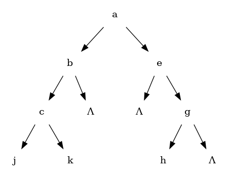

Searching for an Amusing Algorithm
Table of Contents
Introduction
I was asked in an interview once to reconstruct a tree given the pre-order and in-order traversals. I bombed it. I could talk through a general idea. Which I'll do with some illustrations, but I terribly bombed as I did not get an answer.
So, lets do a brief descussion on it. First, a tree.

For this illustration, I'm showing both child links of any node that has any children, with one of them going to Λ if it is a null link. As a quick refresher on the standard orders you can list the nodes of a tree, this tree would be "ABCJKEGH" in pre-order, and "JCKBAEHG" in in-order. (And if you did post-order, you would get "JKCBHGEA".)
The question, then, is given two of these orders, would you have enough information to recreate the tree?
The answer is yes, if the two orders you have ar pre-order and in-order. Also if you have in-order and post-order, but not if you have pre-order and post-order; unless you know the tree is "full," in which case you can use those two orders. For this page, I'm only going to be looking at the first case.
The reason it is doable from the pre-order/in-order combo is that you know the root of the tree from the pre-order, and if you split the in-order with that value, you know the nodes that make up the left and right. From which you can find the pre-order of them and do this again.
This makes an algorithm straight forward. In lisp, taking liberties and using lists for the orders, this is as simple as this:
(defstruct node value left right) (defun make-tree-from-traversals (pre-order in-order) (when pre-order (let* ((root-value (first pre-order)) (left-in-order (list-before in-order root-value)) (right-in-order (list-after in-order root-value)) (left-pre-order (list-filter-to-same-elmts pre-order left-in-order)) (right-pre-order (list-filter-to-same-elmts pre-order right-in-order))) (make-node :value root-value :left (make-tree-from-traversals left-pre-order left-in-order) :right (make-tree-from-traversals right-pre-order right-in-order))))) (defun list-after (lst i) (cond ((eq i (first lst)) (rest lst)) ((eq lst nil) nil) (t (list-after (rest lst) i)))) (defun list-before (lst i) (cond ((eq i (first lst)) nil) ((eq lst nil) nil) (t (cons (first lst) (list-before (rest lst) i))))) (defun list-filter-to-same-elmts (lst elmts) (loop for v in lst if (find v elmts) collect v)) (make-tree-from-traversals '(a b c j k e g h) '(j c k b a e h g))
#S(NODE
:VALUE A
:LEFT #S(NODE
:VALUE B
:LEFT #S(NODE
:VALUE C
:LEFT #S(NODE :VALUE J :LEFT NIL :RIGHT NIL)
:RIGHT #S(NODE :VALUE K :LEFT NIL :RIGHT NIL))
:RIGHT NIL)
:RIGHT #S(NODE
:VALUE E
:LEFT NIL
:RIGHT #S(NODE
:VALUE G
:LEFT #S(NODE :VALUE H :LEFT NIL :RIGHT NIL)
:RIGHT NIL)))
Note that the pretty print of the data is enough to show the structure, where you can see that "e" has a nil left and "g" has a
What was amusing about that?
But I said I bombed this? I also titled the post as searching for an amusing algorithm, so?
I bombed this because I had remembered reading this exact problem in Knuth's Art of Computer Programming Vol 1. I told the person interviewing me, but they weren't aware of any clever algorithm. (That or they just wanted me to get the straight forward way done first. A reasonable desire.)
Regardless, I couldn't shake what I half remembered from that book. And, being an interview, I also could not consult the book. So, I kept battling what I thought I remembered as a straight forward iterative solution that made clever use of "thread" links. (If you don't know what a "threaded tree is, I highly recommend looking those up.)
To make matters worse, I made the mistake of not working out the problem on my first read through. I sketched it in my mind and thought I saw a way to make it happen. But I did not follow through with that.
Flash forward several years, and I finally had a good reason to remember and devote time to this. In a book club at work, we are reading this section and I recalled bombing that interview. So, I was hoping someone in the group would know the trick I did not.
Sadly, nope. And consulting the book showed that I basically remembered all of the hint. Only reference to the algoritm is to link the nodes using the left link to go to the next by pre-order, and the right nodes to go to the next by in-order. From there, it is ostensibly "quite amusing to construct a simple algorithm…"
As of right now, I don't know what the "amusingly simple" algorithm is. However, I have pieced together something. In the spirit of Polya's "use all of the provided data", I thought I would run with a reference in the text that said "In some algorithms it can be guaranteed that the root of any subtree always will appear in a lower memory location than the other nodes of the subtree."
In particular, this trick, I thought, would be all that I needed so that I could recognize "thread" links in the tree from normal ones. If this is the trick, it is certainly not all of it, as I did not see any easy way to work with the threads.
Further, to work with an algorithm that I have control of things being lower in memory than others would be a bit of a challenge. Luckily, no reason to use literal memory locations. I could just build an array and use indexes into the array instead of references to memory.
With that, I came up with this beast:
(defun create-from-traversals-iterative (pre-order in-order) (let* ((n (length pre-order)) (nodes (make-array n))) ;; Crudely link everything in the two orders. Left being next in pre-order, right in-order. (loop for v in pre-order for i from 0 do (setf (elt nodes i) (make-node :value v :left (1+ i) :right (index-of-preorder-for-next-in-order v pre-order in-order)))) ;;The left of the last item will be set one high, quick correction here. (setf (node-left (elt nodes (1- n))) -1) ;;Now, convert all of the index links into standard links, per inspection (loop for node across nodes for i from 0 do (let ((cur node) (highest i) (seen (node-right node))) ;;Find the "highest" node that we can find walking right. (loop while (< highest (node-right cur)) do (setf seen (min seen (node-right cur)) cur (elt nodes (node-right cur)))) (cond ((> i seen) ;; If the root is the highest we saw, there is nothing right of this ;; node (setf (node-right node) nil)) ((< i seen) ;; Otherwise, move the highest we saw to be right of here, removing it ;; from the left of where it is in the array. (setf (node-left (elt nodes (- seen 1))) -1 (node-right node) (elt nodes seen)))) (cond ((< i (node-left node)) ;; If left is still an index, convert that to the relevant ;; node link. (setf (node-left node) (elt nodes (node-left node)))) ((> i (node-left node)) ;; Otherwise, set it to nil. (setf (node-left node) nil))))) (elt nodes 0))) (defun index-of-preorder-for-next-in-order (v pre-order in-order) (let ((next-i (1+ (position v in-order)))) (if (>= next-i (length in-order)) -1 (position (elt in-order next-i) pre-order)))) (create-from-traversals-iterative '(a b c j k e g h) '(j c k b a e h g))
#S(NODE
:VALUE A
:LEFT #S(NODE
:VALUE B
:LEFT #S(NODE
:VALUE C
:LEFT #S(NODE :VALUE J :LEFT NIL :RIGHT NIL)
:RIGHT #S(NODE :VALUE K :LEFT NIL :RIGHT NIL))
:RIGHT NIL)
:RIGHT #S(NODE
:VALUE E
:LEFT NIL
:RIGHT #S(NODE
:VALUE G
:LEFT #S(NODE :VALUE H :LEFT NIL :RIGHT NIL)
:RIGHT NIL)))
As before, visual inspection shows that I do have the same tree that we started with.
Long explanation is that once you have things linked like this, you can just walk to the right of the node you are at until you hit a node "higher" than where you started.
As soon as you do that, you have walked everything to the right of where you are, and the "highest" one you saw is the first item to the right. Remove it from the left of the node above it in preorder, and attach it to the right of the current. (Note that if you didn't see anything lower than this node, set right to nil.)
This just leaves dealing with the left. If it is still an index greater than where you are, set it to a reference to the correct node, otherwise nil.
But these still do many traversals, right?
They do. In talking about the first algorithm, a coworker suggested first that I stop using car/cdr, as they couldn't remember what those did. He also suggested that the "filter" I did was not necessary.
Not surprisingly, he was rignt. I could replace those with two calls, one that is "keep-n" and one that is "drop-n" from the pre-order list. These would either keep or drop the first "n" items from the given list.
That leaves us with:
(defstruct node value left right) (defun make-tree-from-traversals (pre-order in-order) (when pre-order (let* ((root-value (first pre-order)) (left-in-order (list-before in-order root-value)) (right-in-order (list-after in-order root-value)) (left-count (length left-in-order)) (left-pre-order (keep-n (rest pre-order) left-count)) (right-pre-order (drop-n (rest pre-order) left-count))) (make-node :value root-value :left (make-tree-from-traversals left-pre-order left-in-order) :right (make-tree-from-traversals right-pre-order right-in-order))))) (defun list-after (lst i) (cond ((eq i (first lst)) (rest lst)) ((eq lst nil) nil) (t (list-after (rest lst) i)))) (defun list-before (lst i) (cond ((eq i (first lst)) nil) ((eq lst nil) nil) (t (cons (first lst) (list-before (rest lst) i))))) (defun list-filter-to-same-elmts (lst elmts) (loop for v in lst if (find v elmts) collect v)) (defun drop-n (lst n) (if (= n 0) lst (drop-n (rest lst) (1- n)))) (defun keep-n (lst n) (loop for i from 0 below n for v in lst collect v)) (make-tree-from-traversals '(a b c j k e g h) '(j c k b a e h g))
#S(NODE
:VALUE A
:LEFT #S(NODE
:VALUE B
:LEFT #S(NODE
:VALUE C
:LEFT #S(NODE :VALUE J :LEFT NIL :RIGHT NIL)
:RIGHT #S(NODE :VALUE K :LEFT NIL :RIGHT NIL))
:RIGHT NIL)
:RIGHT #S(NODE
:VALUE E
:LEFT NIL
:RIGHT #S(NODE
:VALUE G
:LEFT #S(NODE :VALUE H :LEFT NIL :RIGHT NIL)
:RIGHT NIL)))
Which, since I'm using standard lisp lists, still involves a bit of list scanning, but the point is rather clear that I could optimize some around the calls to keep/drop-n by using a non-linked list based approach if I cared to. That leaves us with just the split that we have to get the left/right in-order lists. (No, I'm not interested in going down that optimization rabbit hole. Indeed, at the least I could do the scan of the in-order list just once such that I got the before/after in one shot…)
Does this translate to the "iterative" approach?
So, can I take some of that trick into what I dubbed the iterative approach? I thought so.
First, let me acknowledge that I made no attempt at putting the nodes in linked order efficiently. Specifically, I do a scan at each one to find what the next "in-order" node would be.
This scan can be easily removed by just doing that in two passes. One pass to build a hash of value to index, and then the next pass I could link everything such that finding the next nodes is just a hash lookup.
That still leaves the "walking" of the tree to the right looking for the smallest element. Is there anything I can glean by just comparing the current index to the index of the right value?
I had hoped that I could use those two to see how many children were to the right. But, alas, that doesn't seem so. Consider a tree that is linked to the right with a fully imbalanced left tree. In that case, the right index will be to the maximum index, but the true right index is to the minimum index. Indeed, I can easily craft many trees where the root node has a left index to the second (which is always the case, of course), and a right index to the fourth.
So, does it help it I not start at the root and move down. Can I use that trick and move from the last element going up? Briefly, I have not managed to find a trick that way, yet.
Is there a more amusing algorithm for this?
I think the only amusement I can see to the algorithm I found is how not simple it is. In particular, I could force this to work with lisp's dynamic nature, but getting this in something like Java would be a lot more typing. (I think it is still doable, but I'd have to have a "Reference" type that was either an index or a proper java reference to the next node. Maybe?)
At any rate, my question for anyone willing to stick through this with me. Is there a more straight forward way of doing this? In particular, does anyone know what the amusing algorithm is? Going back to the "use all you have been given" advice. I think I can use some of the other algorithms from that chapter to come up with something. If any of those pan out, I will post a new page talking about it.